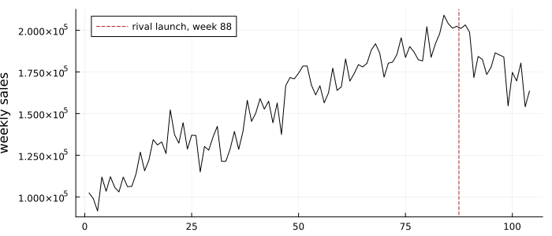
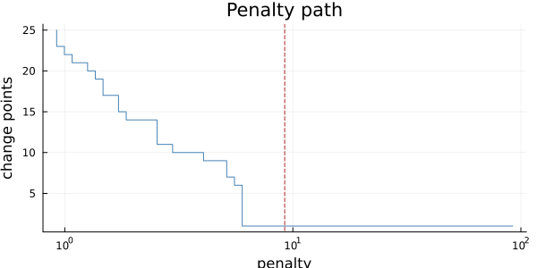
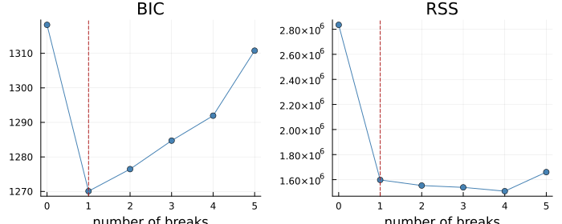
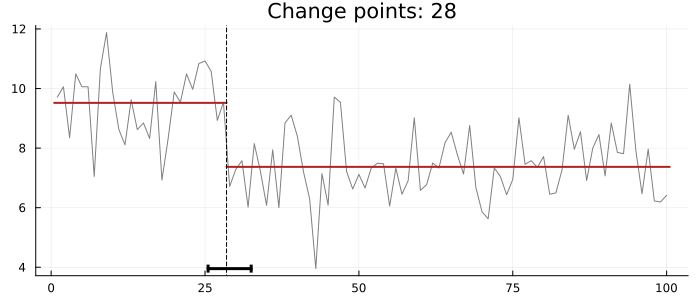
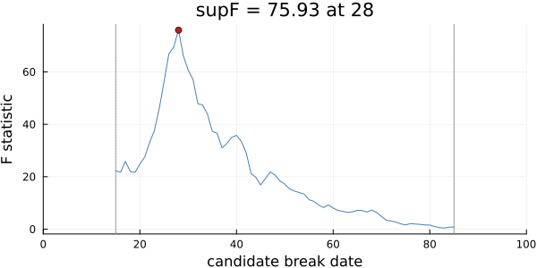
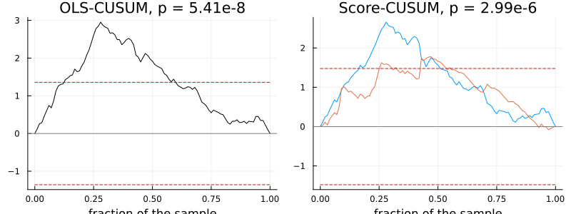
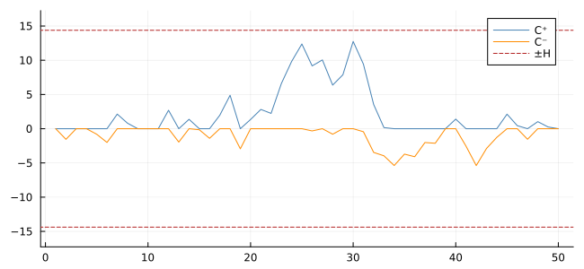
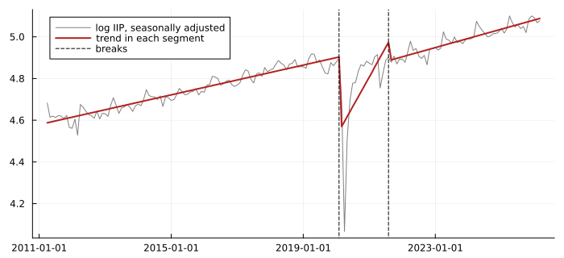

Finding When Something Changed
Three questions that sound alike and are not:
- Did something change at a date I know? A competitor launched, a law passed. This is intervention analysis: put the date into the model and estimate the effect.
- Did something change, and when? The date is unknown. This is change-point detection and break dating, with a confidence interval for the date.
- Is my forecasting model still working? No hypothesis, just a watch kept on the forecast errors with decision limits. This is monitoring: the control charts of statistical process control.
The first two are tests. The third is a signal, and Montgomery, Jennings & Kulahci (2008, §2.6.3, printed pp. 60–66, PDF 73–79) treat it as one. This chapter follows their practitioner's order: known dates, unknown dates, then watching.
A breakpoint b here is the last observation before the change, so the segments are 1:b and b+1:n. That is R's changepoint and strucchange. The textbooks split two ways, and Hamilton (1994) uses both:
| source | the break date is |
|---|---|
| Hamilton §14.3 (printed 425) | last of the first regime (d = 1 for t ≤ T₀) |
| Hamilton §15.5, Eq. 15.5.7 (printed 450) | first of the second (t ≥ T₀) |
| Tsay §5.8 (printed 275) | last of the first (t₀ = 522, "the last trading day before the change") |
| Montgomery §6.7 (printed 336) | first of the second (S_t = 1 for t ≥ 88) |
Montgomery's "Week 88" is breakpoint 87 here. Python's ruptures reports the same numbers as this package, as exclusive ends, and appends n.
A known date: intervention analysis
Montgomery's Example 6.4 (printed pp. 334–337, PDF 347–350): 104 weeks of a cereal brand's sales, with a rival product launched in week 88. The model is an ARIMA(0,1,1) with a step at week 88, y_t = ω₀ S_t + (1 − θB)/(1 − B) ε_t.
using TSAnalytics, Plots, DelimitedFiles, Statistics
using StatsAPI: coef, vcov
cereal = Float64.(readdlm(TSAnalytics.CEREAL, ',', skipstart = 1)[:, 2])
step = Float64.((1:104) .>= 88)
plot(cereal; color = :black, label = "", ylabel = "weekly sales", size = (700, 300))
vline!([87.5]; color = :firebrick, linestyle = :dash, label = "rival launch, week 88")
m = fit_arimax(cereal, (0, 1, 1), step)
println("θ = ", round(-coef(m)[2], digits = 4), ", ω₀ = ", round(coef(m)[1], digits = 1),
" (se ", round(sqrt(vcov(m)[1, 1]), digits = 1), ")")θ = 0.521, ω₀ = -4208.7 (se 8472.0)The step is estimated at a loss of about 4,200 in weekly sales, but with a standard error twice its size: on these data the launch is not distinguishable from noise. R's arima on the same data and model agrees to within 0.1% (ML: θ = 0.5211, ω₀ = −4205.5; CSS: 0.5257, −4277.3).
The book's own table cannot be reproduced. Montgomery's Table 6.13 (SAS, conditional least squares) reports θ = 0.75886 and ω₀ = −2071.5 with standard error 637.4. No specification we tried gives those numbers from the data printed in Table 6.12: the level step, the step in growth, with and without drift, by CSS and by ML. A standard error near 637 is only consistent with the step acting on the differences (a change in weekly growth). The transcription was checked twice against the printed page.
An unknown date: change points
When the date is unknown, search for it. changepoints finds the segmentation that minimises a cost (here, each segment's sum of squares about its mean) plus a penalty per change. The Nile's annual flow, 1871–1970, is the classic case:
nile = Float64.(readdlm(TSAnalytics.NILE, ',', skipstart = 1)[:, end])
cp = changepoints(nile; standardize = true)Change points: 28 (mean cost, pelt, penalty bic = 9.21034, minimum segment 2)
segment means: 9.5192, 7.3706
(y standardised by a robust noise scale)One change, after observation 28: 1898. The penalty, BIC's 2 log n by default, decides how many changes are worth finding. The mean cost is measured in squared units of the data, so standardize = true rescales by a robust noise estimate first. Without it, a penalty of 2 log n against the Nile's variance of about 28,000 finds 43 changes in 100 years.
The search is PELT (Killick, Fearnhead & Eckley 2012), exact and fast, and the same segmentation as R's changepoint on all 120 configurations tested. Binary segmentation (search = :binseg) is greedy and can stop early. The MBIC penalty needs search = :exact, because its per-segment term breaks PELT's pruning rule: R's changepoint combines the two by default and returns a worse segmentation without a warning.
How sensitive is the answer to the penalty? The penalty path shows it:
plot(cp; penalty_path = true, size = (600, 300))
One change holds for every penalty from about 6.5 to the top of the range drawn (92, ten times BIC's): a wide plateau, so the answer is not a fluke of the penalty. Below 6.5 the count climbs quickly, as noise starts to pay for its own segments.
Dating a break, with a confidence interval
breakpoints is Bai & Perron's dynamic programme: the best segmentation for every number of breaks, then BIC to choose among them. With a regression in each segment it dates breaks in a trend or any relationship, not just a mean.
bp = breakpoints(nile)
plot(bp; size = (700, 280))
BIC is lowest at one break. break_confint gives Bai's (1997) confidence interval for its date:
ci = break_confint(bp)
println("break after ", 1870 + ci[2], ", 95% interval ", 1870 + ci[1], "–", 1870 + ci[3])break after 1898, 95% interval 1895–1902plot(cp; confint = ci, size = (700, 300))
1898, between 1895 and 1902: the interval strucchange reports.
Two tests ask whether there is a break at all:
f = fstats(nile)
println("supF = ", round(f.supF, digits = 2), " at ", 1870 + f.argmax)supF = 75.93 at 1898plot(f; size = (600, 300))
The F statistic for a break at each date, with 15% trimmed at each end. That trimming fraction is the one Hamilton states (§14.3, printed 425). No p-value is given. The supF distribution is non-standard (Andrews 1993), and its tabulated critical values are not available under a compatible licence. None of the six textbooks prints them either.
The fluctuation tests have closed-form null distributions, so they do give p-values. The process should wander inside the boundary; leaving it is the test rejecting:
plot(plot(efp(nile)), plot(efp(nile; type = :score_cusum)); layout = (1, 2), size = (800, 300))
Watching a forecasting model
Montgomery's §2.6.3 asks a different question: has this model stopped working? No null hypothesis, no p-value, no break date. Chart the one-step-ahead forecast errors with decision limits, and act when one is crossed. His Table 2.3 (printed 54) lists 50 such errors.
e = Float64.(readdlm(TSAnalytics.FORECAST_ERRORS, ',', skipstart = 1)[:, 2])
σ = 0.8865 * mean(abs.(diff(e))) # moving-range estimate, Eq. 2.48
println("mean ", round(mean(e), digits = 3), ", σ̂ = ", round(σ, digits = 4),
", individuals limits ", round(mean(e) - 3σ, digits = 2), " to ", round(mean(e) + 3σ, digits = 2))mean 0.282, σ̂ = 2.8755, individuals limits -8.34 to 8.91These are the limits of his Figure 2.33 (UCL 8.91, LCL −8.34), computed from his data. The CUSUM (Eq. 2.49) accumulates deviations beyond a reference value K = σ/2 and signals when either sum passes H = 5σ:
function cusum(e, σ; K = σ / 2)
hi = zeros(length(e)); lo = zeros(length(e))
for t in eachindex(e)
hi[t] = max(0, e[t] - K + (t > 1 ? hi[t-1] : 0.0))
lo[t] = min(0, e[t] + K + (t > 1 ? lo[t-1] : 0.0))
end
return hi, lo
end
hi, lo = cusum(e, σ)
H = 5σ
println("H = ", round(H, digits = 3), "; largest CUSUM ", round(max(maximum(hi), -minimum(lo)), digits = 3))H = 14.378; largest CUSUM 12.745plot([hi lo]; color = [:steelblue :darkorange], label = ["C⁺" "C⁻"], size = (650, 300),
ylims = (-1.2H, 1.2H))
hline!([H, -H]; color = :firebrick, linestyle = :dash, label = "±H")
H is 14.38, as in Montgomery's Figure 2.34. His text gives 14.36 because it rounds the mean moving range to 3.24 before multiplying. The CUSUM stays inside, as his example concludes: this is an in-control example and detects nothing. For a chart that does fire, see the Indian example below.
Indian data: the IIP across 2020
India's monthly Index of Industrial Production, April 2011 to March 2026, seasonally adjusted (classical decomposition of the log) and with a linear trend in each segment:
using Dates
iip = dataset("iip_india")
ly = log.(iip.value)
sa = ly .- classical_decompose(ly, 12).seasonal
X = hcat(ones(length(sa)), 1:length(sa))
b = breakpoints(sa; X = X, h = 0.1)
ci = break_confint(b)
for i in axes(ci, 1)
println("break after ", Dates.format(iip.date[ci[i, 2]], "u yyyy"), " 95% interval ",
Dates.format(iip.date[ci[i, 1]], "u yyyy"), " – ", Dates.format(iip.date[ci[i, 3]], "u yyyy"))
endbreak after Feb 2020 95% interval Jun 2019 – Mar 2020
break after Aug 2021 95% interval Jul 2021 – Jan 2023BIC chooses two breaks: the last month before the lockdown, then the end of the recovery. The first interval runs back into 2019 because the series was already slowing.
edges = vcat(0, b.breaks, length(sa))
fit = similar(sa)
for i in 1:length(edges)-1
r = (edges[i] + 1):edges[i+1]
fit[r] = X[r, :] * (X[r, :] \ sa[r])
end
plot(iip.date, sa; color = :gray, label = "log IIP, seasonally adjusted", size = (700, 320),
legend = :topleft)
plot!(iip.date, fit; color = :firebrick, linewidth = 2, label = "trend in each segment")
vline!(iip.date[b.breaks]; color = :black, linestyle = :dash, label = "breaks")
The fluctuation test on the same regression rejects stability:
efp(sa; X = X, type = :ols_cusum)OLS-based CUSUM test: statistic = 1.4597295, p = 0.028199 (limit: Brownian bridge)Summary
| question | function | reference |
|---|---|---|
| effect of a known event | fit_arimax with a step or pulse | Montgomery §6.7 |
| change points, unknown dates | changepoints, penalty_path | R changepoint, Python ruptures |
| breaks in a regression, with dates | breakpoints, break_confint | R strucchange |
| is there a break? | fstats (no p-value), efp | R strucchange |
| is the model still working? | a CUSUM on forecast errors | Montgomery §2.6.3 |
See Regime Switching and Threshold Models for changes that come back. nyblom_test asks, from a fitted model's per-observation scores, whether its parameters stayed constant, without dating anything.